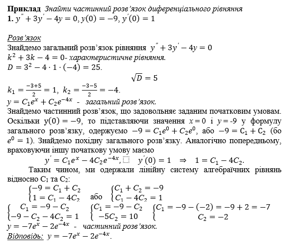
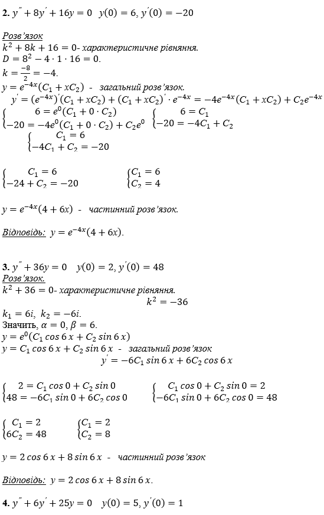
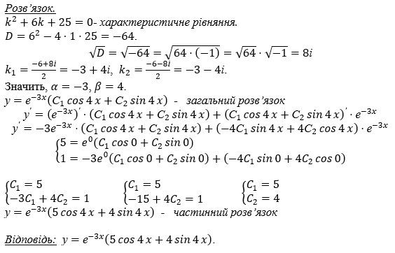

Тема. Лінійні однорідні диференціальні рівняння другого порядку зі сталими коефіцієнтами
Диференціальне рівняння другого порядку в загальному випадку має вигляд \(F\left(x,y,y^\prime,y^{''}\right)=0\). Якщо його можна розв’язати відносно \(у^{''}\), то воно набуває вигляду
\(у^{''}=f\left(x,y,y^\prime\right)\). (1)
Співвідношення (1) називають диференціальним рівняння другого порядку, розв’язаним відносно другої похідної.
Диференціальне рівняння типу
\(y^{''}+p\left(x\right)y^\prime+q\left(x\right)y=r\left(x\right)\) (2)
називають лінійним диференціальним рівнянням другого порядку.
Функції \(p\left(x\right)\) і \(q\left(x\right)\) називають коефіцієнтами цього диференціального рівняння, а функцію \(r\left(x\right)\) - його правою частиною.
Якщо права частина \(r\left(x\right)\) диференціального рівняння (2) є сталою, що дорівнює нулю, то таке рівняння вигляду
\(y^{''}+p\left(x\right)y^\prime+q\left(x\right)y=0\) (3)
називають однорідним диференціальним рівнянням другого порядку.
Теорема (про структуру загального розв’язку однорідного лінійного диференціального рівняння другого порядку). Нехай дано однорідне лінійне диференціальне рівняння другого порядку (3), обидва коефіцієнта якого – функції, неперервні в інтервалі \(\left(a;b\right)\), скінченому чи нескінченому. Якщо дві функції \(у_1\left(х\right)\) і \(у_2\left(х\right)\), визначені в інтервалі \(\left(a;b\right)\), є розв’язком диференціального рівняння (3), такими, що
\(y_1\left(x\right)y^\prime_2\left(x\right)-y^\prime_1\left(x\right)y^\prime_2\left(x\right)\neq 0\) (4)
для всіх \(х∈\left(a;b\right)\), то загальним розв’язком диференціального рівняння (3) є функція
\(у=С_1у_1\left(х\right)+С_2у_2\left(х\right)\), (5)
де \(C_1\) і \(C_2\) - довільні сталі.
Лінійним однорідним диференціальним рівнянням другого порядку зі сталими коефіцієнтами називають рівняння типу
\(y^{''}+py^\prime+qy=0\), (6)
де p і q – числа.
Розв’язок диференціального рівняння (6) шукатимемо у вигляді \(у=е^{kx}\), де k – стала. Оскільки \(у^\prime=kе^{kx}\), а \(у^\prime=k^2е^{kx}\), то, підставивши вирази для \(y,y^\prime,y^{''}\) в диференціальне рівняння (6), дістанемо \(e^{kx}\left(k^2+pk+q\right)=0\), оскільки \(e^{kx}\neq0\), то \(k^2+pk+q=0\). (7)
Отже, функція \(у=е^{kx}\) буде розв’язком диференціального рівняння (6), якщо k – розв’язок квадратного рівняння (7).
Рівняння (7) називають характеристичним для диференціального рівняння (6).
Можливі три випадки:
- Якщо \(D>0\), то розв’язки характеристичного рівняння \(k_1\) і \(k_2\) дійсні і різні: \(k_1\neq k_2\); тоді функції \(у_1=е^{k_1x}\), \(у_2=е^{k_2x}\) є розв’язком диференціального рівняння (6). Загальним розв’язком диференціального рівняння (6) є функція
\(у=С_1е^{k_1x}+С_2е^{k_2x}\),
де \(С_1\) і \(С_2\) – довільні сталі;
- Якщо \(D=0\), то \(k_1\) і \(k_2\) дійсні і рівні: \(k_1=k_2=k\); тоді функції \(у_1=е^{k_1x}\), \(у_2=е^{k_2x}\) є розв’язком диференціального рівняння (6). Загальним розв’язком диференціального рівняння (6) є функція
\(у=е^{kx}\left(С_1+хС_2\right)\),
де \(С_1\) і \(С_2\) – довільні сталі;
- Якщо \(D<0\), то \(k_1\) і \(k_2\) – комплексні-спряжені: \(k_1=\alpha+\betaі\), \(k_2=\alpha-\betaі\), \(\beta\neq0\); тоді функції \(у_1=е^{αx}cosβx\), \(у_2=е^{αx}sinβx\) є розв’язками диференціального рівняння (6). Загальним розв’язком диференціального рівняння (6) в розглядуваному випадку є функція
\(у=е^{αx}\left(С_1cosβx+С_2sinβx\right)\),
де \(C_1\) і \(C_2\) – довільні сталі;


